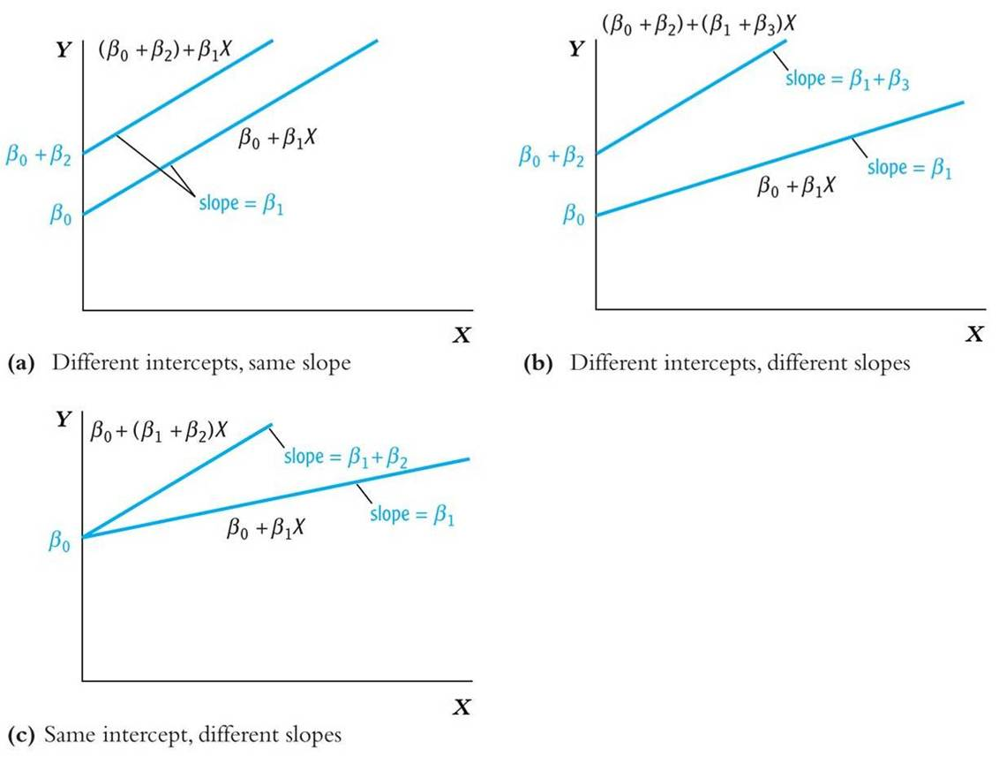

3 Modeling in the Social Sciences
In Chapter 2 we discussed the origins of, working of, and assumptions behind univariate regression. That is, a regression model with only one independent variable \(X\) on the right hand side.1 However, and especially in the social sciences, you almost always see regressions with many independent variables. Depending on the field, these variables can be called control variables, confounding factors or moderator variables. But why are these variables included? Is it only to improve model performance or are there other reasons? Section 3.1 deals with this question whereafter Section 3.2 shows how you can include additional variables in a multivariate regression model and especially how you should interpret them. Section 3.3 extends the multivariate regression model and shows how you can actually use this model to estimate a broad range of linear and non-linear economic models. Section 3.4 discusses the use of multiple dummy variables (see again Section 2.3.2.4) in a way that economists refer to as fixed effects. The last section concludes and provides a further discussion of the benefits and limitations of multivariate regression models.
3.1 Why more independent variables?
So, why do we include more variables? One possible answer is because it makes a better predictive model. That is, a model that is able to explain the variation in the dependent variable \(Y\) better.2 So, the R\(^2\) increases. But, as argued in Chapter 2 we are not so much interested in prediction, but more in establishing a causal relation between \(X\) and \(Y\). So, if you change \(X\) (and only \(X\)) does \(Y\) change and then with how much?
Although economists often claim that they are the only (social-)science that focuses on causality and provides a statistical framework for that, there are other approaches to causality as well. One that is often used in other sciences is the approach of the mathematican Judea Pearl (Pearl 2009). This approach focuses on the use of Directed Acyclical Graphs (DAGs), which is a graphical visualisation of causality chains (or, what impacts what). We borrow this approach for the most simple setting as explained in Figure 3.1. Here, we go back to our Californian school district dataset again, where we still are interested in the effect of class size on school performance. So, we suppose that there is an effect from student teacher ratio on test scores as displayed with an directed arrow in Figure 3.1. We also know that the R\(^2\) of that regression model was rather low (5%), so by default there must be other but yet unknown factors, let us name them for now \(U\) (often as well referred to as unobservables), that influence test scores as well (so a directed arrow going from \(U\) to test scores).
Now we are fine with this is as long as \(U\) does not impact the student teacher ratio. Then, there is still an isolated effect of student teacher ratio on class size and that is exactly what we want to measure. However, if there is a directed arrow going from \(U\) into \(STR\) as depicted by Figure 3.2, then the effect of student teacher ratio is not isolated anymore. Essentially, the effect of student teacher ratio on class size is composed out of two parts:
- The causal effect on student teacher ratio on class size captured by the chain \(\text{STR} \longrightarrow \text{testscore}\). The one we are after.
- The impact of the unknown variables on test scores. As we have not modeled them in our regression model, the effect is captured by the chain \(U \longrightarrow \text{STR} \longrightarrow \text{testscore}\)
Economists refer to this phenomenon as omitted variable bias, whilst in the statistical world, this is as often called confounding variables or the confounding fork (McElreath 2020) and it, unfortunately, occurs very often.

So, when U is a common cause for both student teacher ratio and test scores there is omitted variable bias. If we go back to our population regression model as follows: \[\begin{equation} Y_i = \beta_0 + \beta_1 X_i + u_i, \end{equation}\] then we know that the error \(u\) arises because of factors that influence \(Y\) but are not included in the regression function; so, there are always omitted variables. But they do not always lead to bias. For omitted variable bias to occur, the omitted factor, let’s call it \(Z\)3, must be:
- A determinant of \(Y\) (i.e. \(Z\) is part of \(u\))
- A determinant of the regressor \(X\) (at least, there should hold that \(corr(Z,X) \neq 0\))4
Thus, both conditions must hold for the omission of \(Z\) to result in omitted variable bias.
Now, in our Californian district school dataset we have many more variables. One of them is variable that measures the english language ability (whether the student has English as a second language). Note that in California there are many migrants, especially from Latin-America. Now, you can readily argue that not having English as first language plausibly affects standardized test scores: so, \(Z\) is a determinant of \(Y\). Moreover, immigrant communities tend to be less affluent and thus have smaller school budgets—and, therefore, higher \(STR\): \(Z\) is most likely as well a determinant of \(X\).
So, most likely, our original estimation from Chapter 2, \(\hat{\beta}_1\), is biased (so, it is not the true causal effect). But can we say something about the direction of that bias? Yes, but the argument tends to become very quickly rather complex. In this case, note that districts with more migrant communities tend to have (i) higher class sizes and (ii) lower test scores. So, to the original estimation they add a negative effect. Thus, following this reasoning, the “true” effect must be less negative. Now, especially with negative signs this reasoning becomes rather complex, so if common sense fails you, then there is the following formula:
\[\begin{equation} \hat{\beta}_1 \overset{p}{\to} \beta_1 + \frac{\sigma_u}{\sigma_X}\rho_{Xu}, \end{equation}\] where you should focus on the sign of the correlation between \(X\) and the regression residual \(u\) (all standard errors, \(\sigma\), are always positive by default). Now, the first least squares assumption states that \(\rho_{Xu} = 0\)—no correlation between the regressor and the regression residual. But now there is correlation because of omitted variable bias. And because there is a negative relation between immigrants communities and school performance, \(\rho_{Xu}\) should be negative. Furthermore, because the original estimation from Chapter 2 was already negative to begin with the “true” \(\beta_1\) should be less negative. In conclusion, districts with more English learning students (i) do worse on standardized tests and (ii) have bigger classes (smaller budgets), so ignoring the English learning factor results in overstating the class size effect (in an absolute sense).
You might wonder whether this is actually going on in the Californian district school data. To see this, Figure 3.3 offers a cross tabulation of test scores by class size and percentage English learners.

Now, the table depicted in Figure @ref(fig:omitca) is complex in its various dimensions. We have our two categories of class size (small and large), together with the difference in test scores, but we now stratify this by four categories of percentage English learners. There are several important observations to make here:
- districts with fewer English Learners (so less migrants) have on average higher test scores (what we assumed above);
- districts with fewer English Learners (so less migrants) have smaller classes (what we assumed above);
- the effect of class size with comparable percentages English learners is still (mostly negative), but not as much as we compare for all districts together (the Difference-column). This confirms our reasoning that our original estimate was too negative.
No, as already mentioned above, omitted variable bias occurs very often. So, how to correct for this such that the bias disappaers. In general, there are three strategies:
- we can run a randomized controlled experiment in which treatment (\(STR\)) is randomly assigned: then percentage English learners (\(PctEL\)) is still a determinant of test scores, but by construction \(PctEL\) should be uncorrelated with \(STR\). Unfortunately, is it very difficult to randomize class size in reality and often this strategy is just not attainable as being too costly or unethical (this accounts for all sciences);
- we can adopt the cross tabulation approach of above, with finer gradations of \(STR\) and \(PctEL\). Then by construction, within each group all classes have the same \(PctEL\) so we control for \(PctEL\). A disadvantages is that one needs many observations, especially when one wants to stratify upon other variables as well;
- finally, and perhaps the easiest approach, we can use a population regression model in which the omitted variable (\(PctEL\)) is no longer omitted. We just include \(PctEL\) as an additional regressor in a multiple regression model. This is what the next section deals with. Obviously, a disadvantage of this approach is that you need observations for the omitted variable (but that also accounts for method 2).
3.2 Multivariate regression analysis
So, if we have information about an important omitted variable, as in the case of the size of migrant communities in the example above, then we can use that information in a multivariate population regression model. In the case of two regressors, that would look like: \[\begin{equation} Y_i =\beta_0 + \beta_1 X_{1i} + \beta_2 X_{2i} + u_i, i=1,\ldots,n \end{equation}\] where:
- \(Y\) is the dependent variable
- \(X_1\), \(X_2\) are the two independent variables (regressors)
- \((Y_i, X_{1i}, X_{2i})\) denote the i\(^{\mathrm{th}}\) observation on \(Y\), \(X_1\), and \(X_2\).
- \(\beta_0\) is the unknown population intercept
- \(\beta_1\) is the effect on \(Y\) of a change in \(X_1\), holding \(X_2\) constant
- \(\beta_2\) is the effect on \(Y\) of a change in \(X_2\), holding \(X_1\) constant
- \(u_i\) is the the regression error (omitted factors)
Now, the only element that changes is the interpretation of a parameter, say \(\beta_1\). In this case, it can still be seen as a ‘slope’ parameter, although now in 3-dimensional space, but it now states specifically that the other parameter(s) should be held constant. This does facilitate the interpretation of \(\beta_1\). For example, consider changing \(X_1\) by \(\Delta X_1\) while holding \(X_2\) constant. That means that the population regression line before the change looks like: \[\begin{equation} Y = \beta_0 + \beta_1 X_{1} + \beta_2 X_{2}, \end{equation}\] whilst the population regression line, after the change, looks like: \[\begin{equation} Y + \Delta Y = \beta_0 + \beta_1 (X_{1} + \Delta X_1) + \beta_2 X_{2} \end{equation}\] And if we take the difference, then the interpretation of \(\beta_1\) boils down again to the marginal effect:\(\Delta Y = \beta_1 \Delta X_1\). Or, \(\beta_1 = \frac{\Delta Y}{\Delta X_1}\) when holding \(X_2\) constant and, likewise, \(\beta_2 = \frac{\Delta Y}{\Delta X_2}\) when holding \(X_1\) constant. \(\beta_0\) is now the predicted value of \(Y\) when \(X_1 = X_2 = 0\)
If we do this for the the Californian school district data, then the original population regression line was estimated as: \[\begin{equation} \widehat{TestScore} = 698.9- 2.28 STR \end{equation}\] But if we now include include percent English Learners in the district (\(PctEL\)) to the model then the population regression ‘line’ becomes: \[\begin{equation} \widehat{TestScore} = 686.0- 1.10 STR - 0.65 PctEL \end{equation}\]
Clearly, the effect of student teacher ratio becomes smaller (that is, less negative). That indicates that the original regression suffers from omitted variable bias. And this is what should happen as reasoned above. The STATA syntax for a multivariate regression model is now rather straightforward. You basically add another to the regression equation, as below:
reg testscr str el_pct, robustLinear regression Nu
> mber of obs = 420
F(
> 2, 417) = 223.82
Pr
> ob > F = 0.0000
R-
> squared = 0.4264
Ro
> ot MSE = 14.464
--------------------------------------------------
> ----------------------------
| Robust
testscr | Coefficient std. err. t P>
> |t|
> [95% con
> f. interval]
-------------+------------------------------------
> ----------------------------
str | -1.101296 .4328472 -2.54 0.
> 011
> -1.95213
> -.2504616
el_pct | -.6497768 .0310318 -20.94 0.
> 000
> -.710775
> -.5887786
_cons | 686.0322 8.728224 78.60 0.
> 000
> 668.8754
> 703.189
--------------------------------------------------
> ----------------------------Obviously, the effect of student teacher ration reduces with 50%! The interpretation of the rest of the statistical output, such as measures of fit and test statistics, follows in the subsections below.
3.2.1 Measures of fit for multiple regression
In multivariate regression models, there are four commonly used measures of fit, three of them we have seen before.
- The standard error of regression or the \(SER\) denotes the standard deviation of \(\hat{u}_i\) and includes a degrees of freedom correction (degrees of freedom in this case denotes how many variables your have used and typically is denoted with \(k\). The \(SER\) is defined as: \[\begin{equation} SER = s_{\hat{u}} = \sqrt{\frac{1}{n-k-1} \sum_{i=1}^n \hat{u}^2_i}, \end{equation}\] where \(k\) is the number of variables (including the constant) use in the regression model. Note that in the univariate regression model \(k=2\)—the slope coefficient and the constant.
- The root mean square error (RMSE) which denotes as well the stdandard deviation of \(\hat{u}_i\) but now without degrees of freedom. We have seen this before in Eq. @ref(eq:rmse) and does not change.
- The \(R^2\) which measures the fraction of variance of \(Y\) explained by the independent variables. Again, we have seen this one before
- The adjusted “adjusted \(R^2\)” (or \(\bar{R}^2\)) which is equal to the \(R^2\) with a degrees-of-freedom correction that adjusts for estimation uncertainty. It can be formulated as: \[\begin{equation} \bar{R}^2 = 1 - \frac{n-1}{n-k-1}\frac{SSR}{TSS}. \end{equation}\] Note that using this formulation, in a multivariate setting, it always should hold that \(\bar{R}^2 <R^2\). But why do we care so much for the amount of variables that we use (denoted with \(k\)). That is because with each additional variable the \(R^2\) always increases. And it is essential to notice that when \(k=n\), the \(R^2 = 1\), so there is no variation left anymore. But that feels like cheating. You just have a parameter for each observation that you have, but such a model must be meaningless. Therefore, you always want to correct for the number of variables that you use.
In our Californian school district example that would amount to the following two outcomes. First for the univariate model: \[\begin{eqnarray} TestScore &= &698.9- 2.28 STR \\ &&R^2 = .05, SER = 18.6 \end{eqnarray}\]
And then for the multivariate model.
\[\begin{eqnarray} TestScore &=& 686.0 - 1.10 STR - 0.65 PctEL \\ &&R^2=.426, \bar{R}^2=0.424, SER = 14.5 \end{eqnarray}\]
Note that all measures of fit increases. The \(\bar{R}^2\) now indicates that 42% of all variation in test scores are explained. That is a huge improvement compared to the 5% explanatory power of the univariate case. That indicates that the \(PctEL\) strongly correlates with testscores. But again, we are not so much interested in prediction, but want to find the causal impact of class size instead. Another thing to notice here is that the \(R^2\) and the \(\bar{R}^2\) are very close. That is because the number of variables is much smaller than the number of observations \(k \ll n\), so that the impact of \(k\) is not very big.
A final remark concerns a peculiarity of STATA. In the regression output of above, STATA does not provide the \(\bar{R}^2\). That is because of the option , robust. Without that option, the regression output would give both measures of fit.
reg testscr str el_pct Source | SS df MS
> Number of obs = 420
-------------+----------------------------------
> F(2, 417) = 155.01
Model | 64864.3011 2 32432.1506
> Prob > F = 0.0000
Residual | 87245.2925 417 209.221325
> R-squared = 0.4264
-------------+----------------------------------
> Adj R-squared = 0.4237
Total | 152109.594 419 363.030056
> Root MSE = 14.464
--------------------------------------------------
> ----------------------------
testscr | Coefficient Std. err. t P>
> |t|
> [95% con
> f. interval]
-------------+------------------------------------
> ----------------------------
str | -1.101296 .3802783 -2.90 0.
> 004
> -1.848797
> -.3537945
el_pct | -.6497768 .0393425 -16.52 0.
> 000
> -.7271112
> -.5724423
_cons | 686.0322 7.411312 92.57 0.
> 000
> 671.4641
> 700.6004
--------------------------------------------------
> ----------------------------Another option is to specifically ask STATA to display the \(\bar{R}^2\) by invoking the command display, then some text (text always goes between strings), and finally the thing you want to see (e(r2_a)). Something like:
display "adjusted R2 = " e(r2_a)adjusted R2 = .423680433.2.2 The least squares assumptions for multivariate regression
Thus, it is easy to add other variables, so that the multivariate regression model now looks like: \[\begin{equation} Y_i = \beta_0 + \beta_1 X_{1i} + \beta_2 X_{2i}+\ldots + \beta_k X_{ki}+u_i, i=1,\ldots,n \end{equation}\] Suppose we are interested in \(\beta_1\). How do we then know whether our estimation \(\hat{\beta}_1\) is unbiased? For that we again resort to our least squares assumption, some of them will change a bit and we have to add a fourth one:
- The first least squares assumptions changes slightly. Now, we state that the conditional distribution of \(u\) given all \(X_i\)’s has mean zero, that is, \(E(u|X_1 = x_1,\ldots, X_k = x_k) = 0\). So, \(\beta_1\) is biased even another variable \(X_k\) is correlated with \(u\). So, only of the variables \(X_i\) has to be correlated with \(u\) and then all parameters are to a certain extent biased.
- The second least squares assumption is more or less as before but now in a multivariate fashion, so the whole set of (X\(_{1i}\),,X\(_{ki}\),Y\(_i\)), with \(i =1,\ldots,n\), should be independent and identical distributed (\(i.i.d\)).
- The third least squares assumptions states again that large outliers are rare for all variables included, so for all \(X_1,\ldots, X_k\), and \(Y\).
- The fourth assumption is new and states that there is no perfect multicollinearity. We discuss this further below.
3.2.2.1 Multicollinearity
Multicollinearity comes in two flavours; perfect and imperfect. The former functions as a multivariate least squares assumptions whilst the latter oftentimes gives the largest problems. We start the discussion with perfect multicollinearity and then continue with the case of imperfect multicollinearity.
3.2.2.1.1 Perfect multicollinearity
The official definition of perfect multicollinearity is that there is a perfect linear combination amongst your variables. That means that there is not one optimal solution, but instead many (actually, infinitely many) more. Let us illustrate this by the following example. Suppose you include \(STR\) twice in your regression. Now, STATA produces then the following output:
reg testscr str str el_pct, robustnote: str omitted because of collinearity.
Linear regression Nu
> mber of obs = 420
F(
> 2, 417) = 223.82
Pr
> ob > F = 0.0000
R-
> squared = 0.4264
Ro
> ot MSE = 14.464
--------------------------------------------------
> ----------------------------
| Robust
testscr | Coefficient std. err. t P>
> |t|
> [95% con
> f. interval]
-------------+------------------------------------
> ----------------------------
str | -1.101296 .4328472 -2.54 0.
> 011
> -1.95213
> -.2504616
str | 0 (omitted)
el_pct | -.6497768 .0310318 -20.94 0.
> 000
> -.710775
> -.5887786
_cons | 686.0322 8.728224 78.60 0.
> 000
> 668.8754
> 703.189
--------------------------------------------------
> ----------------------------See that STATA drops one of the \(STR\) variables. But why is that? See that the impact of twice this variable should be equivalent to: \[\begin{equation}
\beta_1 STR = w_1 \beta_1 STR + w_2 \beta_1 STR = (w_1 + w_2) \beta_1 STR ,
\end{equation}\] where \(w_1\) and \(w_2\) are weights chosen such that they satisfy the condition that \(w_1 + w_2 = 1\). But there is an infinite number of combinations that satisfy this condition! So, there is not an optimal solution and one of these variables should be dropped.
The violation of no perfect multicollearity often occurs when using dummies (see again Subsection @ref(sec:dummy)). Suppose that we regress \(TestScore\) on a constant, \(D\), and \(B\), where:\(D_i =1\) if \(STR \leq 20\), \(=0\) otherwise ; \(B_i =1\) if \(STR>20\), \(= 0\) otherwise. This example is slightly more complex as there is no perfect correlation between \(B\) and \(D\). However, the model contains as well a constant and that create a perfect linear combination, namely \(B_i + D_i = 1\) and that is the definition of a constant (\(\beta_1 \times 1\)), so there is perfect multicollinearity in the model.
A different way of seeing this is to consider the following regression model and note that by definition \(D_i = 1- B_i\):
\[\begin{align} Testscr_i &= \beta_0 + \beta_1 D_i + \beta_2 B_i + u_i\\ &= \beta_0 + \beta_1 D_i + \beta_2 (1 - D_i) + u_i\\ &= (\beta_0 + \beta_2) + (\beta_1 - \beta_2) D_i + u_i. \end{align}\] Suppose that the true constant equals \(680\) and the slope parameter equals \(7\). Then it is not difficult to see that there is an infinite amount of combinations possible of values for \(\beta_0, \beta_1\) and \(\beta_2\) that leads to these numbers.
Now, this example is a special case of the so-called dummy variable trap. Suppose you have a set of multiple binary (dummy) variables, which are mutually exclusive and exhaustive—that is, there are multiple categories and every observation falls in one and only one category (e.g., infant, child, teenager, adult). If you include all these dummy variables and a constant, you will have perfect multicollinearity—the dummy variable trap.
There are possible solutions to the dummy variable trap:
- Omit one of the groups (e.g., the infants), or
- Omit the intercept
In most cases you omit one of the groups (typically the one with the lowest value). This give the constant then the interpretation of the average value of that left-out category, where the dummy variables are then the relative differences to that left-out category.
Now, perfect multicollinearity usually reflects a mistake in the definitions of the regressors, or an oddity in the data. And, usually this is not a problem, because if you have perfect multicollinearity, your statistical software will let you know—either by crashing or giving an error message or by “dropping” one of the variables arbitrarily and very often the solution to perfect multicollinearity is to modify your list of regressors such that you no longer have perfect multicollinearity.
3.2.2.1.2 Imperfect multicollinearity
Now imperfect and perfect multicollinearity are quite different despite the similarity of the names. Imperfect multicollinearity, namely, occurs when two or more regressors are very highly correlated. And if two regressors are very highly correlated, then their scatterplot will pretty much look like a straight line—they are collinear—but unless the correlation is exactly \(\pm\) 1, that collinearity is imperfect. What this implies is that one or more of the regression coefficients will be imprecisely estimated. Why is that? That is because of the definition of the coefficient in a multivariate regression model. Namely, the coefficient on \(X_1\) is the effect of \(X_1\) holding \(X_2\) constant, but if \(X_1\) and \(X_2\) are highly correlated, then there is very little variation in \(X_1\) once \(X_2\) is held constant. That means that the data are pretty much uninformative about what happens when \(X_1\) changes but \(X_2\) doesn’t, so the variance of the OLS estimator of the coefficient on \(X_1\) will be large. And this results in large standard errors for one or more of the OLS coefficients. But often this is very hard to detect. Are standard errors high because of imperfect multicollinearity, because the number of observations is very low, or because there is large variation in the data? The answer to this unfortunately boils down to reasoning, but before you start estimating your statistical models it always good to look at scatterplots and correlations between variables.
But what is a high correlation? With a reasonable amount of observations all correlations below \(0.9\) can be considered fine. In practice, only correlations between variables higher than say \(0.95\) start to impose problems.
3.2.3 Testing with multivariate regression models
3.2.3.1 Hypothesis tests and confidence intervals for a single coefficient in multiple regression
Recall from Subsection @ref(sec:unitesting) that for hypothesis testing in a classical statistical framework we make use of the fact that \(\frac{\hat{\beta}_1- E(\hat{\beta}_1)}{\sqrt{var(\hat{\beta}_1)}}\) is approximately distributed as \(N(0,1)\) according to the Central Limit theorem. Thus hypotheses on \(\beta_1\) can be tested using the usual \(t\)-statistic, and confidence intervals are constructed as \(\{\hat{\beta}_1 \pm 1.96 SE (\hat{\beta}_1)\}\). And this finding carries over to the multivariate setting where for \(\beta_2,\ldots, \beta_k\) we make use of the same framework. One thing to keep in mind is that \(\hat{\beta}_1\) and \(\hat{\beta}_2\) are generally not independently distributed—so neither are their \(t\)-statistics (more on this later).
Now, if we return to our Californian school district data set then we find that for the univariate case holds:
\[\begin{equation} TestScore =\underbrace{698.9}_{10.4} - \underbrace{2.28}_{0.52} STR, \end{equation}\]
And the population regression “line” for the multivariate case is estimated as: \[\begin{equation} TestScore = \underbrace{686.0}_{8.7} - \underbrace{1.10}_{0.43} STR - \underbrace{0.650}_{0.031} PctEL (\#eq:testmulti) \end{equation}\]
Remember, the coefficient on \(STR\) in Eq. @ref(eq:testmulti) is the effect on \(TestScores\) of a unit change in \(STR\), holding constant the percentage of English Learners in the district. The corresponding 95% confidence interval for coefficient on \(STR\) in (2) is \(\{-1.10 \pm 1.96 \times 0.43\} = (-1.95,-0.26)\). And the \(t\)-statistic testing \(\beta_{STR} = 0\) is \(t = -1.10/0.43 = -2.54\), so we reject the null-hypothesis at the 5% significance level. More evidence for the strength of the \(PctEL\) variable can be seen from the fact that, under the null-hypothesis of \(\beta_2 = 0\), the following must hold: \(t\text{-statistic} = \frac{\hat{\beta_1}}{\sigma_{\hat{\beta_1}}} = \frac{0.65}{0.03} = 21.7\), which is a very high number for a \(t\)-statistic.
3.2.3.2 Tests of joint hypotheses
So, testing of single coefficients is just as before. Now in the Californian school district dataset there is as well a variable called \(Expn\) denoting the expenditures per pupil. Consider the following population regression model: \[\begin{equation} TestScore_i = \beta0 + \beta_1 STR_i + \beta_2 Expn_i + \beta_3PctEL_i + u_i \end{equation}\] The null hypothesis that “school resources don’t matter” and the alternative that they do, corresponds to:
- \(H_0:\beta_1 =0\) and \(\beta_2 =0\) vs
- \(H_1:\) either \(\beta_1 \neq 0\) or \(\beta_2 \neq 0\) or both
This is a joint hypothesis specifying a value for two or more coefficients. That is, it imposes a restriction on two or more coefficients. In general, a joint hypothesis will involve \(q\) restrictions. In the example above, \(q = 2\), and the two restrictions are \(\beta_1 = 0\) and \(\beta_2 = 0\). A “common sense” idea is to reject if either of the individual \(t\)-statistics exceeds 1.96 in absolute value. But this “one at a time” test isn’t valid: the resulting test rejects too often under the null hypothesis (more than 5%)! That is because the \(t\)-statistics themselves are often not independent. Instead, we need a \(F\)-statistic, which tests all parts of a joint hypothesis at once. Unfortunately, these types of formulas can become quickly rather complex. Consider the \(F\)-test for the special case of the joint hypothesis \(\beta_1 = \beta_{1,0}\) and \(\beta_2 = \beta_{2,0}\) in a regression with two regressors:
\[\begin{equation} F = \frac{1}{2} \left(\frac{t_1^2 + t_2^2 - 2\hat{\rho}_{t_1,t_2}t_1 t_2}{1-\hat{\rho}^2_{t_1 t_2}} \right) \end{equation}\]
where \(\hat{\rho}_{t_1,t_2}\) estimates the correlation between \(t_1\) and \(t_2\). Reject when \(F\) is large (typically to be determined from large statistical tables). The F-statistic is large when \(t_1\) and/or \(t_2\) is large and the F-statistic corrects (in just the right way) for the correlation between \(t_1\) and \(t_2\). The formula for more than two \(\beta\)’s is nasty unless you use matrix algebra. There is a nice large-sample (\(n>50\)) approximate distribution, which is the tail probability of the \(\chi^2_q /q\) distribution beyond the \(F\)-statistic actually computed.
Now, STATA does this in a much easier way by invoking the test command right after the regression. So, for example, we want to test the joint hypothesis that the population coefficients on \(STR\) and expenditures per pupil (\(expn\)) are both zero, against the alternative that at least one of the population coefficients is nonzero.
reg testscr str expn_stu el_pct, r
test str expn_stuLinear regression Nu
> mber of obs = 420
F(
> 3, 416) = 147.20
Pr
> ob > F = 0.0000
R-
> squared = 0.4366
Ro
> ot MSE = 14.353
--------------------------------------------------
> ----------------------------
| Robust
testscr | Coefficient std. err. t P>
> |t|
> [95% con
> f. interval]
-------------+------------------------------------
> ----------------------------
str | -.2863992 .4820728 -0.59 0.
> 553
> -1.234002
> .661203
expn_stu | .0038679 .0015807 2.45 0.
> 015
> .0007607
> .0069751
el_pct | -.6560227 .0317844 -20.64 0.
> 000
> -.7185008
> -.5935446
_cons | 649.5779 15.45834 42.02 0.
> 000
> 619.1917
> 679.9641
--------------------------------------------------
> ----------------------------
( 1) str = 0
( 2) expn_stu = 0
F( 2, 416) = 5.43
Prob > F = 0.0047The output shows an \(F\)-statistic with \(q=2\) restrictions with outcome 5.43. Do not directly interpret this number, but know that \(\text{Prob} > F = 0.0047\) gives the probability that under the null-hypothesis this outcome is produced. So the joint null-hypothesis that both types of expenditures are zero (at the same time), can be rejected at a 5% (and a 1%) significance level. Other types of joint tests can easily be constructed as well. For example, when you want to know whether both coefficient add up to 1, then you would state test str + expn_stu = 1. The final point to make is the \(F\)-test in the regression output itself. Here, that is for example F(3, 416) = 147.20. This is a joint test that all variables, except the constant, have no impact. So, \(\beta_i = 0\) for all \(i\) at the same time. It not often that you come across a general regression \(F\)-test that does not reject the null-hypothesis. It namely implies that your independent variables do not contain any information about the dependent variable.
And with the \(F\)-test, we now have discussed all regression outcome components displayed by STATA. Most of this information you do not need for your report but we will come back later to this.
3.3 Non-linear specifications
The model we are using is coined the linear regression model, and, indeed, one of the underlying assumptions is that the relations between the independent and dependent are linear. Consider the relation again between test scores and class sizes in the Californian school district data. Using the following code (note now the twoway command that ‘binds’ a scatter plot with a population regression line):
graph twoway (lfit testscr str) (scatter testscr str)Which provides the following STATA output.
Indeed, there might be evidence that the relation depicted in Figure @ref(fig:scatterlfitcaschool)—if anything—is linear. But, clearly that is not the case for the relation between test scores and average district income. Namely, the syntax below:
graph twoway (lfit testscr avginc) (scatter testscr avginc)provides the following STATA output.
Figure @ref(fig:scatterincome) shows a non-linear relation, where the effect of income tapers off (note the resemble with Figure @ref(fig:marginalutility))—or, there is a marginal decreasing effect of average district income on average school test scores. Thus, in affluent neighborhood test scores are higher, but increasingly less so. Of course, you can still try to estimate this with a linear population regression line as in Figure @ref(fig:scatterincome), but this introduces a bias. The estimate does not capture that what you want. Namely, it now holds that \(E(u \mid X = x) \neq 0\), because for small \(X\), say \(X<10\), the residuals are negative, for medium sized \(X\)s most residuals are positive and for large \(X>40\) all residuals are negative again. So, there is a clear relation between \(X\) and \(u\) and they fail to be independent. This particular form of bias is coined specification bias. There is another issue here and that is that the effect on \(Y\) of a change in \(X\) depends on the value of \(X\)—that is, the marginal effect of \(X\) is not constant.
To remedy the specification bias, we will use nonlinear regression population regression functions of \(X\), or we estimate a regression function that is nonlinear in \(X\). Here, it is important to see that we do so by transforming \(X\), so the population regression ‘line’. The estimator still remains a linear regression model.
We will analyse below two complementary and often adopted approaches:
- Using polynomials to transform \(X\). That means that the effect is approximated by a quadratic, cubic, or higher-degree polynomial. This approach as well governs to an extent so-called interaction effects which is a special case, where we multiply two different variables.
- Using logarithmic transformations of \(X\), where \(Y\) and/or \(X\) is transformed by taking its logarithm. Here, the main focus is on the interpretation of the \(\hat{\beta}\)s, as they change from a unit increase interpretation to a percentages interpretation which often can be found useful.
3.3.1 Polynomials
Our first approach to non-linear specification is applying polynomials of the variables that we suspect has a non-linear impact. If that is the independent variable \(X\), the we can construct the following linear regression model by using polynomials: \[\begin{equation} Y_i = \beta_0 + \beta_1 X_1 + \beta_2 X^2_i + \ldots + \beta_r X_i^r + u_i (\#eq:poly) \end{equation}\] Note again that this is just the linear regression model—except that the regressors are powers of \(X\)! So, in effect we transform the data—actually create new variables \(X^r\)—, but the specification in parameters remains linear. Estimation, hypothesis testing, etc. proceeds as in the multiple regression model using OLS. However, the coefficients are now a bit more difficult to interpret. Consider the example of above about the relation between test scores average district income, where \(Income_i\) is defined as the average district income in the \(i^{\mathrm{th}}\) district (thousands of dollars per capita). For a quadratic specification, we specify the linear regression model as below: \[\begin{equation} TestScore_i = \beta_0 + \beta_1 Income_i + \beta_2 (Income_i)^2 + u_i \end{equation}\] For a cubic specification the linear regression model becomes: \[\begin{equation} TestScore_i = \beta_0 + \beta_1 Income_i + \beta_2 (Income_i)^2 + \beta_3 (Income_i)^3 + u_i \end{equation}\]
First, we focus on the estimation of the quadratic function. In STATA this would look like:
reg testscr c.avginc##c.avginc, rLinear regression Nu
> mber of obs = 420
F(
> 2, 417) = 428.52
Pr
> ob > F = 0.0000
R-
> squared = 0.5562
Ro
> ot MSE = 12.724
--------------------------------------------------
> ----------------------------
| Robust
testscr | Coefficient std. err. t P>
> |t|
> [95% con
> f. interval]
-------------+------------------------------------
> ----------------------------
avginc | 3.850995 .2680941 14.36 0.
> 000
> 3.32401
> 4.377979
|
c.avginc#|
c.avginc | -.0423085 .0047803 -8.85 0.
> 000
> -.051705
> -.0329119
|
_cons | 607.3017 2.901754 209.29 0.
> 000
> 601.5978
> 613.0056
--------------------------------------------------
> ----------------------------Now, it is straightforward to test the null-hypothesis of linearity against the alternative that the regression function is a quadratic. Namely, we only have to consider the \(t\)-statistic of the quadratic term. And that is larger than 1.96, so against a 5% significance level we reject the null-hypothesis of linearity.
Note by the way the syntax c.avginc##c.avginc which seems a bit strange. However, this particular line of code is very useful for later tabulation, plotting and other manipulations of the output. In this way STATA knows that there should be a quadratic effect of the same variable (avginc). The syntax c. denotes that the variable should be considered as continuous instead of as an integer (try it and behold the horrible output). There are four useful operators that you want to know when working with polynomials and interaction effect:
i.operator: this specifies that the following variable is an integers and should be considered on all its level. This actually create indicator or dummies variablesc.operator: this specifies that the following variable is a continuous variables and should be treated as continuous.#binary operator that specifies an interaction between two variables##binary operator that specifies both interaction between two variables and the individual variable effect
Plotting, non-linear population regression lines are a bit tricky. Namely, you want to combine a polynomial with a linear dimension. One way of doing this is as follows:
predict hat1
scatter (testscr avginc) || (line hat1 avginc, sort)where after the regression we predict the test scores (and name it something like hat1) and then we ask for a line of the prediction for each value of average district income. Note, though, that we have to sort the prediction from small to large to get a smooth line. And this provides the nice curved population regression line in the following STATA output.

But what is now the marginal effect of average district income. That, now, depends on itself. Namely, \(\frac{\partial \text{testscore}}{\partial \text{income}} = \beta_1 + \beta_2 \text{income}\). Another way of seeing this is to compute the effects for different values of \(X\) \[\begin{equation} \widehat{TestScore_i} = 607.3 + 3.85 Income_i - 0.0423(Income_i)^2 \end{equation}\] The predicted change in test scores for a change in income from $5,000 per capita to $6,000 per capita then amounts to: \[\begin{eqnarray} \Delta \widehat{TestScore} &=& 607.3 + 3.85 \times 6 - 0.0423 \times 6^2 \\ && - (607.3 + 3.85\times 5 - 0.0423\times 5^2)\\ &=&3.4 \end{eqnarray}\]
And if calculate the predicted effects for different values of \(X\), then we get the following table:
| Change in Income (1000 dollar per capita) | $\Delta \widehat{TestScore}$ |
|---|---|
| from 5 to 6 | 3.4 |
| from 25 to 26 | 1.7 |
| from 45 to 46 | 0.0 |
Thus, the effect of a change in income is greater at low than high income levels (perhaps, a declining marginal benefit of an increase in school budgets?). But, be careful here! What is the effect of a change from 65 to 66? That is quite negative and already Figure @ref(fig:scatterqua) shows that a quadratic specification start to decline again the value of about 50; and perhaps that is not the behaviour that you want. So, with polynomials it is essential not to extrapolate outside the range of the data (and still interpret the outcome).
The estimation of a cubic specification is straightforward:
reg testscr c.avginc##c.avginc##c.avginc, rLinear regression Nu
> mber of obs = 420
F(
> 3, 416) = 270.18
Pr
> ob > F = 0.0000
R-
> squared = 0.5584
Ro
> ot MSE = 12.707
--------------------------------------------------
> ----------------------------
| Robust
testscr | Coefficient std. err. t P>
> |t|
> [95% con
> f. interval]
-------------+------------------------------------
> ----------------------------
avginc | 5.018677 .7073504 7.10 0.
> 000
> 3.62825
> 6.409103
|
c.avginc#|
c.avginc | -.0958052 .0289537 -3.31 0.
> 001
> -.152719
> -.0388913
|
c.avginc#|
c.avginc#|
c.avginc | .0006855 .0003471 1.98 0.
> 049
> 3.26e-06
> .0013677
|
_cons | 600.079 5.102062 117.61 0.
> 000
> 590.0499
> 610.108
--------------------------------------------------
> ----------------------------Where if we now want to test the null- hypothesis of linearity, then we have to have invoke an \(F\)-test. Namely, the alternative hypothesis is that the population regression is quadratic and/or cubic, that is, it is a polynomial of degree up to 3, so:
- \(H_0\): Coefficients on \(Income^2\) and \(Income^3 = 0\)
- \(H_1\): at least one of these coefficients is nonzero.
And the outcome below shows that the null-hypothesis that the population regression is linear is rejected at the 5% (and 1%) significance level against the alternative that it is a polynomial of degree up to 3.
test avginc#avginc avginc#avginc#avginc ( 1) c.avginc#c.avginc = 0
( 2) c.avginc#c.avginc#c.avginc = 0
F( 2, 416) = 37.69
Prob > F = 0.00003.3.2 Interaction variables
Using interaction variables is a special case of polynomial effects. Namely, instead of multiply a variable with itself \(X\times X = X^2\), you now multiple a variable with another variable. And you want to do this to take into account interactions between independent variables. Assume, for example, that a class size reduction is more effective in some circumstances than in others (which is quite conceivable). Perhaps smaller classes help more if there are many English learners (i.e., large migrant communities), who need more individual attention. That is, \(\frac{\partial TestScore}{\partial STR}\) might depend on \(PctEL\). More generally, this subsection looks into the fact that the marginal effect of \(\frac{\partial Y}{\partial X_1}\) might depend on some other variable \(X_2\).
3.3.2.1 Interactions between two binary variables
First, we look into the simplest (and perhaps most insightful) case of two binary (dummy variables). Consider therefore the following linear regression model: \[\begin{equation} Y_i =\beta_0 +\beta_1 D_{1i} + \beta_2 D_{2i} +u_i, \end{equation}\] where both \(D_{1i}\) and $ D_{2i}$ are now considered to be binary. Now, of course, \(\beta_1\) is the effect of changing \(D_1=0\) to \(D_1=1\). So, in this specification, this effect doesn’t depend on the value of \(D_2\). To allow the effect of changing \(D_1\) to depend on \(D_2\), we have to include the interaction term \(D_{1i} \times D_{2i}\) as a regressor: \[\begin{equation} Y_i =\beta_0 +\beta_1 D_{1i} + \beta_2 D_{2i} + \beta_3 (D_{1i} \times D_{2i}) + u_i \end{equation}\]
To interpret now the coefficient \(\beta_1\) we compare the two cases for \(D_1=0\) to \(D_1=1\)” \[\begin{eqnarray} E(Y_i|D_{1i}=0, D_{2i}=d_2) &=& \beta_0 + \beta_2 d_2 \\ E(Y_i|D_{1i}=1, D_{2i}=d_2) &=& \beta_0 + \beta_1 + \beta_2 d_2 + \beta_3 d_2 \end{eqnarray}\] If we now subtract them from each other: \[\begin{equation} E(Y_i|D_{1i}=1, D_{2i}=d2) - E(Y_i|D_{1i}=0, D_{2i}=d_2) = \beta_1 + \beta_3 d_2 \end{equation}\] then we have the marginal effect of \(D_1\) which now depends on \(d_2\). The interpretation of \(\beta_3\) boils down to being incremental to the effect of \(D_1\), when \(D_2 = 1\)
Let us go back to our Californian school district example with the following variables to be used: test scores, student teacher ratio, and English learners. Let: \[\begin{eqnarray} HiSTR &=& 1 \text{ if } STR \geq 20 \text{ and } HiEL = 1 \text{ if } PctEL \geq 10 \\ HiSTR &=& 0 \text{ if } STR < 20 \text{ and } HiEL = 0 \text{ if } PctEL < 10 \\ \end{eqnarray}\] And if we have the estimation results we get the following outcome. \[\begin{equation} \widehat{TestScore} = 664.1 - 18.2 HiEL - 1.9 HiSTR - 3.5(HiSTR \times HiEL) \end{equation}\] So, how to interpret the various parameters? Perhaps the simple way is to construct the following two-by-two table:
| $HiEL = 0$ | $HiEL = 1$ | |
|---|---|---|
| $HiSTR = 0$ | $664.1$ | $664.1 - 18.2 = 645.9$ |
| $HiSTR = 1$ | $664.1 - 1.9 = 662.2$ | $664.1 - 1.9 - 18.2 - 3.5= 640.5$ |
Now, Table @ref(tab:intdummies) specifies for each combination (and there are exactly four of them) of \(HiSTR\) and \(HiEL\) the average expected test score outcome. Clearly, there are different ‘marginal’ effects of \(HiSTR\). Namely, the effect of \(HiSTR\) when \(HiEL = 0\) is \(-1.9\), whilst the effect of \(HiSTR\) when \(HiEL = 1\) is \(-1.9 - 3.5 = -5.4\). This points out that a class size reduction is estimated to have a bigger effect when the percent of English learners is large. However, when you estimate this in STATA then you see that this interaction is not statistically significant, because the \(t\)-statistic equals \(3.5/3.1 = 1.1\)
3.3.2.2 Interactions between continuous and binary variables
The second case we consider is between a continuous and a binary variable. First assume the following regression model: \[\begin{equation} Y_i =\beta_0 + \beta_1 X_i + \beta_2 D_i + +u_i, \end{equation}\] where \(D_i\) is a binary variable and \(X\) is a continuous variable. As specified above, the effect on \(Y\) of \(X\) (holding \(D\) constant) = \(\beta_1\), which does not depend on \(D\). To allow the effect of \(X\) to depend on \(D\), we can include the interaction term \(D_i \times X_i\) as a regressor: \[\begin{equation} Y_i =\beta_0 + \beta_1 X_i + \beta_2 D_i + \beta_3 (D_i \times X_i) + u_i \end{equation}\]
What this binary-continuous interaction does is essential create two different population regression lines. Namely, for observations with \(D_i= 0\) (the \(D = 0\) group or the \(D=0\) regression line) there is: \[\begin{equation} Y_i = \beta_0 + \beta_1 X_i + u_i, \end{equation}\] Whilst for observations with \(D_i= 1\) (the \(D = 1\) group or the \(D = 1\) regression line) the regression line comes down to: \[\begin{eqnarray} Y_i &=& \beta_0 + \beta_2 + \beta_1 X_i + \beta_3 X_i + u_i \\ &=& (\beta_0 + \beta_2) + (\beta_1 + \beta_3) X_i + u_i \end{eqnarray}\]
And these two population regression lines might both differ in the level (the constant) and in the slope of the line. So, there are three possibilities as depicted in Figure @ref(fig:interaction)

In the first panel (a), \(\beta_3 = 0\), so there is only a level effect. In the second panel (b), both \(\beta_2\) and \(\beta_3\) are not 0, so there is both a level and a slope effect. The last panel indicates that \(\beta_2 = 0\), meaning that there is only a slope effect. But how to interpreting the coefficients now? Therefore, we take the marginal effect of \[\begin{equation} Y =\beta_0 + \beta_1 X +\beta_2 D+ \beta_3 (D \times X) \end{equation}\] which yields: \[\begin{equation} \frac{\partial Y}{\partial X} = \beta_1 + \beta_3 D \end{equation}\] Thus, the effect of \(X\) depends on \(D\) and \(\beta_3\) is the increment to the effect of \(X\), when \(D = 1\) (a slope effect)
To see this in our Californian school district example we now use the variables test scores, student teacher ratio and the as previously defined dummy variable \(HiEL\) as: \[\begin{equation} \widehat{TestScore} = 682.2 - 0.97 STR + 5.6 HiEL - 1.28(STR \times HiEL) \end{equation}\] Now when \(HiEL = 0\) the population regression line amounts to: \[\begin{equation} \widehat{TestScore} = 682.2 - 0.97 STR \end{equation}\] And when \(HiEL = 1\) the population regression line is: \[\begin{eqnarray} \widehat{TestScore} &=& 682.2 - 0.97 STR + 5.6 - 1.28 STR \\ &=& 687.8 - 2.25 STR \end{eqnarray}\] Thus we have two regression lines: one for each \(HiSTR\) group. And the conclusion is that a class size reduction is estimated to have a larger effect when the percent of English learners (migrant communities) is large.
Hypothesis testing is as before. To test whether the two regression lines have the same slope, the null-hypothesis boils down to the coefficient of \(STR \times HiEL\) being zero: the \(t\)-statistic of this one become \(-1.28/0.97 = -1.32\) and thus we do not reject this test. To test whether the two regression lines have the same intercept, the null-hypothesis becomes the coefficient of \(HiEL\) being zero, yielding: \(t = -5.6/19.5 = 0.29\), so we do not reject that null-hypothesis either. Interestingly, the null-hypothesis that the two regression lines are the same—population coefficient on \(HiEL = 0\) and population coefficient on yields \(STR \times HiEL = 0\): \(F = 89.94 (p-value < .001)\). So, we reject the joint hypothesis but neither individual hypothesis.
Finally, the question may arise how to draw such lines as in Figure @ref(fig:interaction). For this the following code is very useful:
gen hiel = (el_pct >= 10)
reg testscr c.str##i.hiel, r
margins hiel, at(str=( 14 ( 2 ) 26 ))
marginsplotLinear regression Nu
> mber of obs = 420
F(
> 3, 416) = 63.67
Pr
> ob > F = 0.0000
R-
> squared = 0.3103
Ro
> ot MSE = 15.88
--------------------------------------------------
> ----------------------------
| Robust
testscr | Coefficient std. err. t P>
> |t|
> [95% con
> f. interval]
-------------+------------------------------------
> ----------------------------
str | -.9684601 .5891016 -1.64 0.
> 101
> -2.126447
> .1895268
1.hiel | 5.639141 19.51456 0.29 0.
> 773
> -32.72029
> 43.99857
|
hiel#c.str |
1 | -1.276613 .9669194 -1.32 0.
> 187
> -3.17727
> .6240436
|
_cons | 682.2458 11.86781 57.49 0.
> 000
> 658.9175
> 705.5742
--------------------------------------------------
> ----------------------------
Adjusted predictions
> Number of obs
> = 420
Model VCE: Robust
Expression: Linear prediction, predict()
1._at: str = 14
2._at: str = 16
3._at: str = 18
4._at: str = 20
5._at: str = 22
6._at: str = 24
7._at: str = 26
--------------------------------------------------
> ----------------------------
| Delta-method
| Margin std. err. t P>
> |t|
> [95% con
> f. interval]
-------------+------------------------------------
> ----------------------------
_at#hiel |
1 0 | 668.6874 3.701457 180.66 0.
> 000
> 661.4115
> 675.9633
1 1 | 656.454 4.85794 135.13 0.
> 000
> 646.9048
> 666.0031
2 0 | 666.7505 2.577328 258.70 0.
> 000
> 661.6843
> 671.8167
2 1 | 651.9638 3.391411 192.24 0.
> 000
> 645.2974
> 658.6302
3 0 | 664.8136 1.536485 432.68 0.
> 000
> 661.7933
> 667.8338
3 1 | 647.4737 2.026549 319.50 0.
> 000
> 643.4901
> 651.4572
4 0 | 662.8766 .9248105 716.77 0.
> 000
> 661.0588
> 664.6945
4 1 | 642.9835 1.18965 540.48 0.
> 000
> 640.645
> 645.322
5 0 | 660.9397 1.458111 453.28 0.
> 000
> 658.0735
> 663.8059
5 1 | 638.4934 1.851156 344.92 0.
> 000
> 634.8546
> 642.1321
6 0 | 659.0028 2.484598 265.24 0.
> 000
> 654.1189
> 663.8867
6 1 | 634.0032 3.18456 199.09 0.
> 000
> 627.7434
> 640.2631
7 0 | 657.0659 3.605093 182.26 0.
> 000
> 649.9794
> 664.1523
7 1 | 629.5131 4.64319 135.58 0.
> 000
> 620.386
> 638.6401
--------------------------------------------------
> ----------------------------
Variables that uniquely identify margins: str
hielSo, first, we generate a new dummy variable hiel as discussed above. Then we regress testscores on class size, the new hiel dummy variable and the interaction using the two hashtags. We then ask for the marginal effect of hiel, so for both values of it (being 0 and 1), for all class sizes between 14 and 26 (with steps of 2). Finally, we ask for the plots of the margins using the command marginsplot. This provides the following STATA plot.
Clearly, Figure @ref(fig:interactionplot) shows that district with more English learners (containing larger migrant communities) have lower test scores overall. Above that, class size seems to have a large negative effect on districts with more English learners as the slope is more negative.
3.3.2.3 Interactions between two continuous variables
The last case are interaction between two continuous variables and that is always a difficult case of interpret. Starting again with the model: \[\begin{equation} Y_i =\beta_0 + \beta1 X_{1i} +\beta_2 {X_{2i}} +u_i, \end{equation}\] where both \(X_1\), \(X_2\) are continuous and as specified, the effect of \(X_1\) doesn’t depend on \(X_2\) and the effect of \(X_2\) doesn’t depend on \(X_1\). Now, to allow the effect of \(X_1\) to depend on \(X_2\), we include the interaction term \(X_{1i} \times X_{2i}\) as a regressor. Where, to interpret the coefficients, we take the first derivative of \(X_1\) in: \[\begin{equation} Y_i = \beta_0 + \beta_1 X_{1i} + \beta_2 X_{2i} + \beta_3 (X_{1i} \times X_{2i}) + u_i \end{equation}\] which yields: \[\begin{equation} \frac{\partial Y}{\partial X} = \beta_1 + \beta_3 X_2 \end{equation}\] where \(\beta_3\) should be interpreted as the increment to the effect of \(X_1\) from a unit change in \(X_2\).
3.3.3 Logarithmic transformations
To incorporate non-linear effect, very often logarithmic transformations are used of \(Y\) and/or \(X\), where typically we use \(\ln(X)\) as the natural logarithm of \(X\). One feature of logarithmic transformations is that they permit modeling relations in percentage terms (like elasticities), rather than linearly. That is because: \[\begin{equation} \ln(x+\Delta x) - \ln(x) = \ln (1 + \frac{\Delta x}{x}) \cong \frac{\Delta x}{x} \end{equation}\] Note that this is an approximation, but from calculus we know that \(\frac{d \ln(x)}{dx}=\frac{1}{x})\). And the above approximation works quite well for small numbers. For example, numerically: \(\ln(1.01) = .00995 \cong .01\) and \(\ln(1.10) = .0953 \cong .10\), where the latter is still rather close. Now remember the following rules for natural logarithms 1. \(\ln(a\times b)= \ln(a)+\ln(b)\) 2. \(\ln(\frac{a}{b}) =\ln(a) - \ln(b)\) 3. \(\ln(a^\alpha) = \alpha \ln(a)\) 4. \(\ln(e^X) = X\).
When you encounter a nonlinear model such as the ones adopted in Chapter @ref(surplus) a strategy that often works is log-linearization. That works as follows \[\begin{equation} Y = A K^\alpha L^{1-\alpha} \rightarrow \ln(Y) = \ln(A) + \alpha \ln(K) + (1-\alpha) \ln(L), \end{equation}\] where you take the natural logarithm on both sides. There are three different cases of logarithmic regression models as specified in Table @ref(tab:logspecification).
| Case | Population regression model |
|---|---|
| linear-log | $Y_i=\beta_0 + \beta_1 \ln(X_i) + u_i$ |
| log-linear | $\ln(Y_i)=\beta_0 + \beta_1 (X_i) + u_i$ |
| log-log | $\ln(Y_i)=\beta_0 + \beta_1 \ln(X_i) + u_i$ |
Though statistical testing remains the same, the interpretation of the slope coefficient differs in each case. To derive the interpretationwe want to find the marginal effect of \(X\) using the first derivative.
3.3.3.1 Linear-log population regression model
The linear-log population regression model is specified as: \[\begin{equation} Y = \beta_0 + \beta_1 \ln(X) \end{equation}\] Now take the first derivative: \[\begin{equation} \frac{\partial Y}{\partial X} = \frac{\beta_1}{X} \end{equation}\] so \[\begin{equation} \beta_1 = \frac{\partial Y}{\partial X / X} \end{equation}\] In this case that means that \(\beta_1\) should be interpreted as the absolute change of \(Y\) when \(X\) changes with \(\beta_1/100\) percent. To illustrate this, consider the case where we take natural logarithm od district income, so we define the new regressor as, \(\ln(Income)\)
The model is now linear in \(\ln(Income)\), so the linear-log model can be estimated by OLS, which yields \[\begin{equation}
\widehat{TestScore} = 557.8 + 36.42\times \ln(Income_i)
\end{equation}\] so an 1% increase in \(Income\) is associated with an increase in test scores of 0.36 points on the test. And again, standard errors, confidence intervals, \(R^2\)—all the usual tools of regression apply here. But the difficulty in plottin the new regression line remains. Consider the following STATA syntax, where we first have to define the new regressor by invoking the generate command.
gen lninc = ln(avginc)
reg testscr lninc, r
predict testhat
graph twoway (line testhat avginc, sort) (scatter testscr avginc)This now provides the following STATA output.
When you compare @ref(fig:scatterlnincome) with @ref(fig:scatterqua) then you notice that in the case of logarithm the population remains increasing (but less and less steep). This can be considered as an advantage when you want to estimate decreasing (or increasing) return.
3.3.3.2 Log-linear population regression model
The second case we consider is the log-linear population regression model, as specified by: \[\begin{equation} \ln(Y) = \beta_0 + \beta_1 X \end{equation}\] To find the interpretation of \(\beta1_1\), we again take the first derivative \(\frac{\partial Y}{\partial X}\), but first transform the model like this: \[\begin{equation} Y = exp( \beta_0 + \beta_1 X ) \end{equation}\] then take the first derivative: \[\begin{equation} \frac{\partial Y}{\partial X} = \beta_1 exp( \beta_0 + \beta_1 X ) = \beta_1 Y \end{equation}\] and collec terms \[\begin{equation} \beta_1 = \frac{\partial Y / Y}{\partial X } \end{equation}\]
The interpretation of \(\beta_1\) now is that one unit change in \(X\) causes a \(\beta_1\) percentage in \(Y\)
3.3.3.3 Log-log population regression model
Finally, we have our third case, being the log-log population regression model as specified by: \[\begin{equation} \ln(Y) = \beta_0 + \beta_1 \ln(X) \end{equation}\]
To find the interpretation of \(\beta1_1\), we again take the first derivative \(\frac{\partial Y}{\partial X}\), but first transform the model like this: \[\begin{equation} Y = exp( \beta_0 + \beta_1 \ln(X) ) \end{equation}\] So \[\begin{equation} \frac{\partial Y}{\partial X} = \beta_1 /X exp( \beta_0 + \beta_1 \ln(X) ) = \beta_1 Y /X \end{equation}\] and after collecting terms we end up with an elasticity: \[\begin{equation} \beta_1 = \frac{\partial Y / Y}{\partial X / X } \end{equation}\]
As an example consider the case when we want to regress ln(test scores) on ln(income). To do so, we first define a new dependent variable, ln(TestScore), and a new regressor, ln(Income) The model is now a linear regression of ln(TestScore) against ln(Income), which can be estimated by OLS as follows \[\begin{equation} \widehat{ln(TestScore)} = 6.336 + 0.0554 \times ln(Income_i), \end{equation}\] where the interpretation is that an 1% increase in \(Income\) is associated with an increase of .0554% in \(TestScore\) (\(Income\) up by a factor of 1.01, \(TestScore\) up by a factor of 1.000554)
Suppose that we now want to plot both the log-linear and the log-log specification, then we can use the following syntax:
gen lninc = ln(avginc)
gen lntestscr = ln(testscr)
reg lntestscr lninc, r
predict testhat1
reg lntestscr avginc, r
predict testhat2
graph twoway (line testhat1 avginc, sort) (line testhat2 avginc, sort) (scatter lntestscr avginc), legend(order(1 "log-log specification" 2 "log-linear specification" 3 "Observations")) which provides the following STATA output.
Note that the \(y\)-axis is on a logarithmic scale here, thus the log-linear specification is now a linear line.
3.3.3.4 Summary: logarithmic transformations
We have seen three different cases of logarithmic specification, differing in whether \(Y\) and/or \(X\) is transformed by taking logarithms. Now, the regression is linear in the new variable(s) \(\ln(Y)\) and/or \(\ln(X)\), and the coefficients can be estimated by OLS where hypothesis tests and confidence intervals are now implemented and interpreted ‘as usual’. Only the interpretation of the coefficients differs from case to case and is directly related to percentage changes (growth) and elasticities. Oftentimes, the choice of specification, however, should be guided by judgment (which interpretation makes the most sense in your application?), tests, and plotting predicted values. Sometimes, though, you have a structural economic model such as Equation @ref(eq:directutility), which defines the type of specification you should use. Finally, see that in economics many models exists with decreasing or increasing return to scale and that these are very closely related with logarithmic specifications.
3.4 Using fixed effects in panel data
Multivariate regression is a powerfull tool for controlling for the effect of variables for which we have data. But often we do not have data on what we suspect might be important—data, such as individual characteristics like ambition, intelligence, drive or stamina. Or regional of country data, where the type of soil, the ruggedness (hilliness), or population density determine to a large extent the behaviour of people living on it. If we do not have this type of data, then it not always the case that everything is lost. Especially, when we have repeated observations, so observations of the same entity throughout time. This is referred to as panel data and requires one additional subscript \(t\) as in \(X_{it}\) indicating the observation \(X\) on individual made at time \(t\). To understand why this sometimes works, we temporarily change to another dataset and that is the ‘fatality’ data collected by Levitt and Porter (2001) and deals with the relation between drunk driving and fatal accidents in the States of the US between 1982 and 1988. For this particular example we look at the impact of the ‘beer tax’, measured as the real tax in dollars on a case of beer, on ‘fatality’, measured as the number of annual traffic deaths per 10,000 people in the population of each stata. For this we first read the data and manipulate the mortality variable
use "./data/fatality.dta", clear
gen fatality = allmort/pop * 10000and then run a simple regression:
regress fatality beertax, robustLinear regression Nu
> mber of obs = 336
F(
> 1, 334) = 47.59
Pr
> ob > F = 0.0000
R-
> squared = 0.0934
Ro
> ot MSE = .54374
--------------------------------------------------
> ----------------------------
| Robust
fatality | Coefficient std. err. t P>
> |t|
> [95% con
> f. interval]
-------------+------------------------------------
> ----------------------------
beertax | .3646054 .0528524 6.90 0.
> 000
> .2606399
> .468571
_cons | 1.853308 .0471297 39.32 0.
> 000
> 1.760599
> 1.946016
--------------------------------------------------
> ----------------------------But these outcomes are very strange. For every dollar increase in tax, number of fatal accidents per 10,000 people increases with 0.36, which is statistically significantly different from 0. What is going on here. Most likely this effect is biased because of omitted variable bias. States in the US differ widely in terms of population density, environment, institutions, religion, poverty, and so on and so forth. And Those state characteristics might influence both the variables beertax and fatality.
Fortunately, for each state we have yearly data. So, that is 7 observations per stata and we can make use of that by using fixed effects, which is a very common technique in the social sciences—especially in economics. We model the use of fixed effects in this example as follows: \[\begin{equation}
\text{fatality}_{it} = \beta_0 + \beta_1\text{beertax}_{it} + \beta_3 S_1 + \ldots + \beta_51 S_{48} + u_{it},
\end{equation}\] where \(S_i\) denote indicator (dummies) for each state which constitute the fixed effects. In total there are 48 states in this dataset, so we have 48 dummies. Note that these fixed effects only depend on the state variation, not on time variation. So, essentially what these fixed effects capture is all state specific characteristics which are constant over time. And most of the characteristics’ examples given above do not vary that much over time, so by using these state fixed effects we can control for them. In STATA you can estimate this in a straightforward way as regress fatality beertax i.state, robust, but this lots of statistical output that you are usually not interested in. Almost just as easy would be is to invoke the areg command, where you specifically state that the state variable should be used as dummies but not shown using absorb(state): and then run a simple regression:
areg fatality beertax, absorb(state) robustLinear regression, absorbing indicators
> Number of obs
> = 336
Absorbed variable: state
> No. of categories
> = 48
> F(1, 287)
> = 10.41
> Prob > F
> = 0.0014
> R-squared
> = 0.9050
> Adj R-squared
> = 0.8891
> Root MSE
> = 0.1899
--------------------------------------------------
> ----------------------------
| Robust
fatality | Coefficient std. err. t P>
> |t|
> [95% con
> f. interval]
-------------+------------------------------------
> ----------------------------
beertax | -.6558737 .2032797 -3.23 0.
> 001
> -1.055982
> -.2557655
_cons | 2.377075 .1051516 22.61 0.
> 000
> 2.170109
> 2.584041
--------------------------------------------------
> ----------------------------Now, see what happens with the coefficient of the beer tax variable. It changes sign! So from positive it becomes negative. That is how disruptive omitted variable bias can be. Also see that by including all these state fixed effects, the \(\bar{R^2}\) now increase enormously to 91%, which does make sense because the states explain the variation in fatality rate to a large extent (e.g., compare Kansas with Connecticut).
This is just a snapshot of the use of fixed effects in panel data, but for now this is enough. But for now, know that the use of fixed effects can go a long way in addressing omitted variable bias.
3.5 Conclusion and discussion
With right hand side we mean on the right side of the equal sign \(=\). It is often abbreviated with RHS.↩︎
This is not entirely true. Increasing the R\(^2\) explains in-sample variation better, not necessarily out-of-sample. The latter is really what matters for prediction and this is the focus of many machine learning techniques. Note that this argument is directly related with the regression towards the mean argument made in Section 2.3.1.↩︎
\(Z\) can be both known or unknown, so that is why we change from \(U\) to \(Z\)↩︎
In econometric textbooks, as, e.g, in Stock, Watson, et al. (2003), this condition is weakened to only being correlation (\(Z\) and \(X\) are correlated). However, if the directed arrow goes from \(STR\) into \(U\) in Figure 3.2 then that would lead to something else than omitted variables, namely to a difference between a direct (\(\text{STR} \longrightarrow \text{testscore}\)) and an indirect effect (\(\text{STR} \longrightarrow U \longrightarrow \text{testscore}\)).↩︎